Terra
O bioma inicial e mais comum ao redor do spawn. Ótimo para aprender combate e farm de chaves.
RPG 2D em mundo aberto com mapa procedural, nove biomas distintos e progressão baseada em atributos — sem classes fixas: o seu estilo de jogo vem das armas que você empunha e dos pontos que investe a cada nível.
Explore, negocie com NPCs guiados por LLM, complete missões, abra baús e portais com chaves dos biomas, enfrente inimigos em tiers e prepare-se para masmorras sombrias e o caminho rumo ao portal do infinito.
Você começa perto do bioma da Terra, onde os inimigos mais comuns aparecem com mais frequência. Ao explorar o mapa você encontra NPCs, baús, fontes de cura e portais — todos podem virar pontos de viagem que consomem mana. Inimigos tier 2 dropam fragmentos usados pelo ferreiro para evoluir equipamentos.
A cada nível, o jogador ganha 10 pontos para distribuir livremente entre os seis atributos. Skills das armas desbloqueiam quando você investe nos atributos ligados a cada tipo de arma.
Cada cartão usa duas colunas para os tiers no desktop (no celular, pilha em uma coluna para caber sprites grandes). As fichas de água, lama, pedra e lava seguem a ordem correta de tiers que você passou.
O bioma inicial e mais comum ao redor do spawn. Ótimo para aprender combate e farm de chaves.
Faixa verde com fauna própria e materiais alinhados ao tema.
Deserto com solaris e criaturas reptilianas; chaves da areia abrem baús compatíveis com a distância percorrida.
Bioma gelado com inimigos peculiares e loot temático.
Área mágica — fauna com tema fantástico (sprite do tier 3 nomeado “Leon” no site; arquivo exportado como lion).
Rios e zonas úmidas — criaturas rápidas no líquido.
Pântano espesso — linha de peixes e crustáceos travados no pântano.
Bioma rochoso — não confundir com o material de crafting “pedra”.
Zona vulcânica — criaturas escaladas ao calor extremo.
Chefes das masmorras Dark — tier acima da fauna comum dos biomas; lutas mais duras e loot correspondente.
Criaturas voadoras — corvo, águia, borboleta, coruja e morcego — aparecem em qualquer bioma, tendem a fugir e não duelam como os demais inimigos. Cada uma dropa o seu totem; ao consumir, você é guiado ao NPC, baú, portal ou fonte mais próxima.
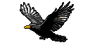
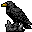
Corvo
→ CorvoTotem
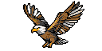
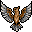
Águia
→ AguiaTotem
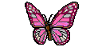
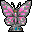
Borboleta
→ BorboletaTotem
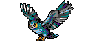
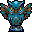
Coruja
→ CorujaTotem
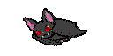
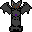
Morcego
→ MorcegoTotem
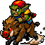
Goblin batedor — aparece em bandos de três em qualquer bioma. São agressivos e rápidos; ao contrário dos voadores, não dropam totens, mas soltam mais moedas que a média dos outros inimigos.
Escala dano e progressão ligada à espada e ao uso do escudo.
Deslocamento e ritmo de exploração pelo mundo procedural.
Sistema do arco e flecha e da aljava; desbloqueia skills do arco.
Reserva de vida e sobrevivência em combates longos.
Mitigação de golpes — sinergiza com equipamentos pesados e ritmo melee.
Poder do cajado e do livro mágico; desbloqueia skills do cajado.
Cada arma tem 5 habilidades que se abrem conforme você investe pontos no atributo correspondente: força para espada, agilidade para arco, magia para cajado.
Ilustração mínima: apenas os ícones de madeira para cada kit (o jogo tem a mesma linha em todos os materiais).
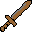
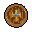
Par melee clássico • Skills ligadas à força
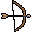
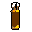
Dano à distância • Skills ligadas à agilidade
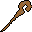
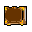
Magias • Skills ligadas à magia
Peças de aparência variam por material; aqui só o conjunto inicial em madeira para não poluir a página.
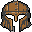
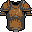
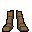
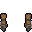
Cada material altera o visual de todas as categorias de item. Na grade, espadas ilustram quase todos os tiers; para couro usamos o capacete (não há espada de couro no jogo). Para galaxy segue o ícone geral do pacote.
O Robiati aceita qualquer tipo de drop como ingrediente. Se enfurecer, pode entregar uma poção de veneno de propósito (efeito descrito abaixo). O Ronaldo Mercador também vende poções e totens.
Gogarion, Quintino e Robiati são encontros fixos do early game. Ronaldo, Correia e Lidi Naga Fada são andarilhos (aparecem ao explorar).
Oferece uma espada, um arco com flechas ou um cajado conforme a conversa e o estado da economia do jogador. Possui três missões; ao completá-las você ganha ouro e desbloqueia, em sequência, escudo, aljava e livro mágico — fechando os três kits de combate.
Une fragmentos dropados por inimigos tier 2 aos itens equipáveis para elevar o nível das peças. Centro da progressão de gear entre biomas.
Aceita qualquer drop para sintetizar poções — lista visual na aba Poções. Cuidado: se ficar enfurecido, entrega uma poção de veneno (Remove 50% do HP atual, conforme o item no jogo).
Cada um carrega uma história, três quests e uma loja com itens aleatórios — sempre alinhados ao clima do bioma onde aparecem.
NPCs ambulantes — não ficam fixos no mapa. Encontrou, conversou, negociou.
Exigem chave do bioma correspondente (baú da areia → chave da areia). Loot compatível com a distância percorrida no mapa, mais ouro.
Octógonos com água rosada que restauram vida e mana após o banho ritual. (Sem sprite dedicado neste export — só descrição.)
Teletransporte para outros mundos; abrir custa 5 chaves do bioma do portal. Chaves dropam dos inimigos daquele bioma.
NPCs encontrados, baús, fontes e portais viram destinos rápidos que gastam mana ao usar.
Os portais levam às masmorras D3 — Darkworld: há três tipos de inimigos Dark, cada um num tier próprio, que soltam itens corrompidos. Cada bioma também guarda um boss tier 4 e uma gema. Ao reunir as nove gemas, abre-se o portal do infinito para o confronto com o boss final, sem encerrar o jogo de vez.
Na dungeon Dark ligada ao bioma da Terra (Dirt), o boss é especialmente poderoso: trava lutas insanas e serve como um dos picos de dificuldade do ciclo Darkworld. Os chefes dos outros biomas ficam para você descobrir no jogo — aqui só destacamos esse primeiro como referência de intensidade.
Loot temático: fragmentos corrompidos e ingredientes ligados ao ciclo das dungeons.
Cada bioma pode gerar buracos que levam ao SideWorld: fase em scroll lateral 2D, estilo plataforma clássico. No fim do trecho você pode encontrar NPC, baú, portal, pergaminho, item… ou nada.
Os pergaminhos encontrados ao final desses trechos são especiais: guardam a localização de novos segredos — coordenadas ou pistas que apontam para outro encontrável no mundo principal (NPC, fonte, baú ou portal), empurrando a exploração além do caminho óbvio.